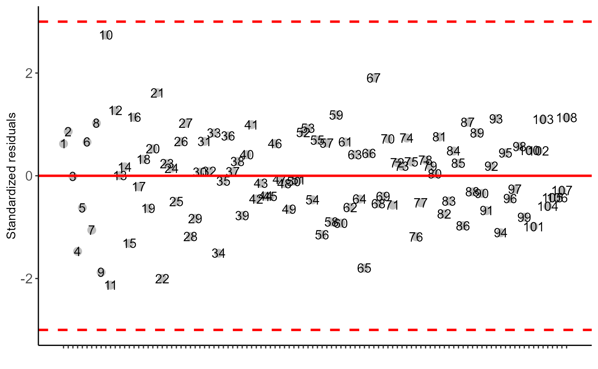

FAT3DBC.ad.RdAnalysis of an experiment conducted in a randomized block design in a triple factorial scheme with one aditional control using analysis of variance of fixed effects.
FAT3DBC.ad(
f1,
f2,
f3,
block,
response,
responseAd,
norm = "sw",
alpha.f = 0.05,
alpha.t = 0.05,
quali = c(TRUE, TRUE, TRUE),
mcomp = "tukey",
transf = 1,
constant = 0,
names.fat = c("F1", "F2", "F3"),
ylab = "Response",
xlab = "",
xlab.factor = c("F1", "F2", "F3"),
sup = NA,
grau = c(NA, NA, NA),
grau12 = NA,
grau13 = NA,
grau23 = NA,
grau21 = NA,
grau31 = NA,
grau32 = NA,
grau123 = NA,
grau213 = NA,
grau312 = NA,
fill = "lightblue",
theme = theme_classic(),
ad.label = "Additional",
angulo = 0,
errorbar = TRUE,
addmean = TRUE,
family = "sans",
dec = 3,
geom = "bar",
textsize = 12,
labelsize = 4,
point = "mean_sd",
angle.label = 0
)Numeric or complex vector with factor 1 levels
Numeric or complex vector with factor 2 levels
Numeric or complex vector with factor 3 levels
Numerical or complex vector with blocks
Numerical vector containing the response of the experiment.
Numerical vector containing the aditional response
Error normality test (default is Shapiro-Wilk)
Level of significance of the F test (default is 0.05)
Significance level of the multiple comparison test (default is 0.05)
Defines whether the factor is quantitative or qualitative (qualitative)
Multiple comparison test (Tukey (default), LSD, Scott-Knott and Duncan)
Applies data transformation (default is 1; for log consider 0; `angular` for angular transformation)
Add a constant for transformation (enter value)
Allows labeling the factors 1, 2 and 3.
Variable response name (Accepts the expression() function)
Treatments name (Accepts the expression() function)
Provide a vector with two observations referring to the x-axis name of factors 1, 2 and 3, respectively, when there is an isolated effect of the factors. This argument uses `parse`.
Number of units above the standard deviation or average bar on the graph
Polynomial degree in case of quantitative factor (default is 1). Provide a vector with three elements.
Polynomial degree in case of quantitative factor (default is 1). Provide a vector with n levels of factor 2, in the case of interaction f1 x f2 and qualitative factor 2 and quantitative factor 1.
Polynomial degree in case of quantitative factor (default is 1). Provide a vector with n levels of factor 3, in the case of interaction f1 x f3 and qualitative factor 3 and quantitative factor 1.
Polynomial degree in case of quantitative factor (default is 1). Provide a vector with n levels of factor 3, in the case of interaction f2 x f3 and qualitative factor 3 and quantitative factor 2.
Polynomial degree in case of quantitative factor (default is 1). Provide a vector with n levels of factor 1, in the case of interaction f1 x f2 and qualitative factor 1 and quantitative factor 2.
Polynomial degree in case of quantitative factor (default is 1). Provide a vector with n levels of factor 1, in the case of interaction f1 x f3 and qualitative factor 1 and quantitative factor 3.
Polynomial degree in case of quantitative factor (default is 1). Provide a vector with n levels of factor 2, in the case of interaction f2 x f3 and qualitative factor 2 and quantitative factor 3.
Polynomial degree in case of quantitative factor (default is 1). Provide a vector with n levels of factor 1, in the case of interaction f1 x f2 x f3 and quantitative factor 1.
Polynomial degree in case of quantitative factor (default is 1). Provide a vector with n levels of factor 2, in the case of interaction f1 x f2 x f3 and quantitative factor 2.
Polynomial degree in case of quantitative factor (default is 1). Provide a vector with n levels of factor 3, in the case of interaction f1 x f2 x f3 and quantitative factor 3.
Defines chart color (to generate different colors for different treatments, define fill = "trat")
ggplot2 theme (default is theme_classic())
Aditional label
x-axis scale text rotation
Plot the standard deviation bar on the graph (In the case of a segment and column graph) - default is TRUE
Plot the average value on the graph (default is TRUE)
Font family
Number of cells
Graph type (columns or segments)
Font size
Label size
This function defines whether the point must have all points ("all"), mean ("mean"), standard deviation (default - "mean_sd") or mean with standard error ("mean_se") if quali= FALSE. For quali=TRUE, `mean_sd` and `mean_se` change which information will be displayed in the error bar.
label angle
The analysis of variance table, the Shapiro-Wilk error normality test, the Bartlett homogeneity test of variances, the Durbin-Watson error independence test, multiple comparison test (Tukey, LSD, Scott-Knott or Duncan) or adjustment of regression models up to grade 3 polynomial, in the case of quantitative treatments. The column chart for qualitative treatments is also returned.For significant triple interaction only, no graph is returned.
The order of the chart follows the alphabetical pattern. Please use `scale_x_discrete` from package ggplot2, `limits` argument to reorder x-axis. The bars of the column and segment graphs are standard deviation.
The function does not perform multiple regression in the case of two or more quantitative factors. The bars of the column and segment graphs are standard deviation.
In the final output when transformation (transf argument) is different from 1, the columns resp and respo in the mean test are returned, indicating transformed and non-transformed mean, respectively.
Principles and procedures of statistics a biometrical approach Steel, Torry and Dickey. Third Edition 1997
Multiple comparisons theory and methods. Departament of statistics the Ohio State University. USA, 1996. Jason C. Hsu. Chapman Hall/CRC.
Practical Nonparametrics Statistics. W.J. Conover, 1999
Ramalho M.A.P., Ferreira D.F., Oliveira A.C. 2000. Experimentacao em Genetica e Melhoramento de Plantas. Editora UFLA.
Scott R.J., Knott M. 1974. A cluster analysis method for grouping mans in the analysis of variance. Biometrics, 30, 507-512.
Ferreira, E. B., Cavalcanti, P. P., and Nogueira, D. A. (2014). ExpDes: an R package for ANOVA and experimental designs. Applied Mathematics, 5(19), 2952.
Mendiburu, F., and de Mendiburu, M. F. (2019). Package ‘agricolae’. R Package, Version, 1-2.
library(AgroR)
data(enxofre)
respAd=c(2000,2400,2530,2100)
attach(enxofre)
#> The following objects are masked from cloro (pos = 4):
#>
#> bloco, f1, f2, resp
#> The following objects are masked from cloro (pos = 5):
#>
#> bloco, f1, f2, resp
#> The following object is masked from simulate3:
#>
#> resp
#> The following object is masked from simulate1:
#>
#> resp
#> The following object is masked from aristolochia (pos = 8):
#>
#> resp
#> The following objects are masked from simulate2:
#>
#> bloco, resp
#> The following objects are masked from laranja:
#>
#> bloco, resp
#> The following object is masked from aristolochia (pos = 11):
#>
#> resp
#> The following objects are masked from cloro (pos = 12):
#>
#> bloco, f1, f2, resp
#> The following object is masked from passiflora:
#>
#> bloco
with(enxofre, FAT3DBC.ad(f1, f2, f3, bloco, resp, respAd))
#>
#> ------------------------------------------
#> Normality of errors
#> ------------------------------------------
#> Shapiro-Wilk normality test
#>
#> data: anava$residuals
#> W = 0.989, p-value = 0.5281
#>
#> As the calculated p-value is greater than the 5% significance level, hypothesis H0 is not rejected. Therefore, errors can be considered normal
#>
#> ------------------------------------------
#> Homogeneity of Variances
#> ------------------------------------------
#> Bartlett test of homogeneity of variances
#>
#> data: anava$residuals by paste(Fator1, Fator2, Fator3)
#> Bartlett's K-squared = 25.924, df = 26, p-value = 0.4673
#>
#> As the calculated p-value is greater than the 5% significance level, hypothesis H0 is not rejected. Therefore, the variances can be considered homogeneous
#>
#> ------------------------------------------
#> Independence from errors
#> ------------------------------------------
#> Durbin-Watson test
#>
#> data: anava
#> DW = 2.8704, p-value = 0.9879
#> alternative hypothesis: true autocorrelation is greater than 0
#>
#> As the calculated p-value is greater than the 5% significance level, hypothesis H0 is not rejected. Therefore, errors can be considered independent
#>
#>
#> -----------------------------------------------------------------
#> Additional Information
#> -----------------------------------------------------------------
#>
#> CV (%) = 6.73
#> Mean Factorial = 4985.6044
#> Median Factorial = 4975.775
#> Mean Aditional = 2257.5
#> Median Aditional = 2250
#> Possible outliers = No discrepant point
#>
#> ------------------------------------------
#> Analysis of Variance
#> ------------------------------------------
#> Df Sum Sq Mean.Sq F value Pr(F)
#> Fator1 2 532880.7 266440.37 2.4651449 9.135221e-02
#> Fator2 2 2593572.1 1296786.07 11.9980528 2.729789e-05
#> Fator3 2 1012836.0 506417.98 4.6854526 1.187090e-02
#> bloco 3 221831.3 73943.77 0.6841385 5.642972e-01
#> Fator1:Fator2 4 568195.7 142048.92 1.3142572 2.716971e-01
#> Fator1:Fator3 4 2177620.9 544405.23 5.0369161 1.123066e-03
#> Fator2:Fator3 4 548172.3 137043.08 1.2679425 2.894205e-01
#> Fator1:Fator2:Fator3 8 2255321.1 281915.14 2.6083197 1.365673e-02
#> Factorial vs Aditional 1 28706993.5 28706993.46 265.6012669 0.000000e+00
#> Residuals 81 8754726.6 108083.04
#>
#>

#>
#> ------------------------------------------
#>
#> Interaction F1*F2*F3 significant: unfolding the interaction
#>
#> ------------------------------------------
#>
#> ------------------------------------------
#> Analyzing F1 within the combination of levels F2 and F3
#> ------------------------------------------
#> Df Sum Sq Mean Sq F value
#> Fator2: 150 Fator3: Ciclo Completo 2 110556.18 55278.09 0.5114409
#> Fator2: 450 Fator3: Ciclo Completo 2 509409.88 254704.94 2.3565671
#> Fator2: 1350 Fator3: Ciclo Completo 2 63027.18 31513.59 0.2915683
#> Fator2: 150 Fator3: Reprodutivo 2 1100604.58 550302.29 5.0914766
#> Fator2: 450 Fator3: Reprodutivo 2 195182.15 97591.07 0.9029268
#> Fator2: 1350 Fator3: Reprodutivo 2 199700.39 99850.20 0.9238285
#> Fator2: 150 Fator3: Vegetativo 2 1515236.80 757618.40 7.0095953
#> Fator2: 450 Fator3: Vegetativo 2 1485001.57 742500.78 6.8697249
#> Fator2: 1350 Fator3: Vegetativo 2 355299.69 177649.85 1.6436421
#> Pr(>F)
#> Fator2: 150 Fator3: Ciclo Completo 0.601554237
#> Fator2: 450 Fator3: Ciclo Completo 0.101210264
#> Fator2: 1350 Fator3: Ciclo Completo 0.747871735
#> Fator2: 150 Fator3: Reprodutivo 0.008263048
#> Fator2: 450 Fator3: Reprodutivo 0.409422047
#> Fator2: 1350 Fator3: Reprodutivo 0.401138104
#> Fator2: 150 Fator3: Vegetativo 0.001556985
#> Fator2: 450 Fator3: Vegetativo 0.001754460
#> Fator2: 1350 Fator3: Vegetativo 0.199654814
#>
#>
#> F1 inside of each level of 150 of F2 and Ciclo Completo of F3
#> resp letters
#> 675 5027.233 a
#> 225 4927.000 a
#> 75 4792.932 a
#>
#>
#> F1 inside of each level of 150 of F2 and Reprodutivo of F3
#> resp letters
#> 675 5056.610 a
#> 225 4847.748 ab
#> 75 4335.730 b
#>
#>
#> F1 inside of each level of 150 of F2 and Vegetativo of F3
#> resp letters
#> 75 5246.363 a
#> 675 4578.007 b
#> 225 4429.288 b
#>
#>
#> F1 inside of each level of 450 of F2 and Ciclo Completo of F3
#> resp letters
#> 75 5389.980 a
#> 675 5085.130 a
#> 225 4889.233 a
#>
#>
#> F1 inside of each level of 450 of F2 and Reprodutivo of F3
#> resp letters
#> 675 4968.540 a
#> 75 4847.222 a
#> 225 4658.573 a
#>
#>
#> F1 inside of each level of 450 of F2 and Vegetativo of F3
#> resp letters
#> 75 5286.368 a
#> 225 5125.075 a
#> 675 4472.670 b
#>
#>
#> F1 inside of each level of 1350 of F2 and Ciclo Completo of F3
#> resp letters
#> 75 5305.762 a
#> 675 5188.823 a
#> 225 5131.625 a
#>
#>
#> F1 inside of each level of 1350 of F2 and Reprodutivo of F3
#> resp letters
#> 225 5147.488 a
#> 75 4984.855 a
#> 675 4831.542 a
#>
#>
#> F1 inside of each level of 1350 of F2 and Vegetativo of F3
#> resp letters
#> 75 5561.840 a
#> 675 5355.302 a
#> 225 5140.382 a
#>
#>
#>
#> ------------------------------------------
#> Analyzing F2 within the combination of levels F1 and F3
#> ------------------------------------------
#> Df Sum Sq Mean Sq F value
#> Fator1: 75 Fator3: Ciclo Completo 2 835403.88 417701.94 3.8646390
#> Fator1: 225 Fator3: Ciclo Completo 2 136069.20 68034.60 0.6294660
#> Fator1: 675 Fator3: Ciclo Completo 2 53620.78 26810.39 0.2480536
#> Fator1: 75 Fator3: Reprodutivo 2 935907.40 467953.70 4.3295755
#> Fator1: 225 Fator3: Reprodutivo 2 486225.50 243112.75 2.2493144
#> Fator1: 675 Fator3: Reprodutivo 2 102906.69 51453.35 0.4760538
#> Fator1: 75 Fator3: Vegetativo 2 236015.40 118007.70 1.0918244
#> Fator1: 225 Fator3: Vegetativo 2 1320014.22 660007.11 6.1064815
#> Fator1: 675 Fator3: Vegetativo 2 1859098.18 929549.09 8.6003230
#> Pr(>F)
#> Fator1: 75 Fator3: Ciclo Completo 0.0249420362
#> Fator1: 225 Fator3: Ciclo Completo 0.5354625190
#> Fator1: 675 Fator3: Ciclo Completo 0.7809086855
#> Fator1: 75 Fator3: Reprodutivo 0.0163516308
#> Fator1: 225 Fator3: Reprodutivo 0.1120205476
#> Fator1: 675 Fator3: Reprodutivo 0.6229570591
#> Fator1: 75 Fator3: Vegetativo 0.3404909997
#> Fator1: 225 Fator3: Vegetativo 0.0033872915
#> Fator1: 675 Fator3: Vegetativo 0.0004102157
#>
#>
#> F2 inside of each level of 75 of F1 and Ciclo Completo of F3
#> resp letters
#> 450 5389.980 a
#> 1350 5305.762 ab
#> 150 4792.932 b
#>
#>
#> F2 inside of each level of 75 of F1 and Reprodutivo of F3
#> resp letters
#> 1350 4984.855 a
#> 450 4847.222 ab
#> 150 4335.730 b
#>
#>
#> F2 inside of each level of 75 of F1 and Vegetativo of F3
#> resp letters
#> 1350 5561.840 a
#> 450 5286.368 a
#> 150 5246.363 a
#>
#>
#> F2 inside of each level of 225 of F1 and Ciclo Completo of F3
#> resp letters
#> 1350 5131.625 a
#> 150 4927.000 a
#> 450 4889.233 a
#>
#>
#> F2 inside of each level of 225 of F1 and Reprodutivo of F3
#> resp letters
#> 1350 5147.488 a
#> 150 4847.748 a
#> 450 4658.573 a
#>
#>
#> F2 inside of each level of 225 of F1 and Vegetativo of F3
#> resp letters
#> 1350 5140.382 a
#> 450 5125.075 a
#> 150 4429.288 b
#>
#>
#> F2 inside of each level of 675 of F1 and Ciclo Completo of F3
#> resp letters
#> 1350 5188.823 a
#> 450 5085.130 a
#> 150 5027.233 a
#>
#>
#> F2 inside of each level of 675 of F1 and Reprodutivo of F3
#> resp letters
#> 150 5056.610 a
#> 450 4968.540 a
#> 1350 4831.542 a
#>
#>
#> F2 inside of each level of 675 of F1 and Vegetativo of F3
#> resp letters
#> 1350 5355.302 a
#> 150 4578.007 b
#> 450 4472.670 b
#>
#> ------------------------------------------
#> Analyzing F3 within the combination of levels F1 and F2
#> ------------------------------------------
#> Df Sum Sq Mean Sq F value Pr(>F)
#> Fator1: 75 Fator2: 150 2 1658512.5880 829256.2940 7.672399500 0.0008883787
#> Fator1: 225 Fator2: 150 2 572143.2840 286071.6420 2.646776321 0.0770052140
#> Fator1: 675 Fator2: 150 2 575635.3215 287817.6608 2.662930740 0.0758465730
#> Fator1: 75 Fator2: 450 2 664226.1133 332113.0567 3.072758167 0.0517271849
#> Fator1: 225 Fator2: 450 2 435267.0706 217633.5353 2.013577032 0.1401389049
#> Fator1: 675 Fator2: 450 2 846116.7155 423058.3577 3.914197282 0.0238393735
#> Fator1: 75 Fator2: 1350 2 668625.3330 334312.6665 3.093109276 0.0507581367
#> Fator1: 225 Fator2: 1350 2 505.0583 252.5292 0.002336436 0.9976663582
#> Fator1: 675 Fator2: 1350 2 572918.8352 286459.4176 2.650364077 0.0767463328
#>
#>
#> F3 inside of each level of 75 of F1 and 150 of F2
#> resp letters
#> Vegetativo 5246.363 a
#> Ciclo Completo 4792.932 ab
#> Reprodutivo 4335.730 b
#>
#>
#> F3 inside of each level of 75 of F1 and 450 of F2
#> resp letters
#> Ciclo Completo 5389.980 a
#> Vegetativo 5286.368 a
#> Reprodutivo 4847.222 a
#>
#>
#> F3 inside of each level of 75 of F1 and 1350 of F2
#> resp letters
#> Vegetativo 5561.840 a
#> Ciclo Completo 5305.762 ab
#> Reprodutivo 4984.855 b
#>
#>
#> F3 inside of each level of 225 of F1 and 150 of F2
#> resp letters
#> Ciclo Completo 4927.000 a
#> Reprodutivo 4847.748 a
#> Vegetativo 4429.288 a
#>
#>
#> F3 inside of each level of 225 of F1 and 450 of F2
#> resp letters
#> Vegetativo 5125.075 a
#> Ciclo Completo 4889.233 a
#> Reprodutivo 4658.573 a
#>
#>
#> F3 inside of each level of 225 of F1 and 1350 of F2
#> resp letters
#> Reprodutivo 5147.488 a
#> Vegetativo 5140.382 a
#> Ciclo Completo 5131.625 a
#>
#>
#> F3 inside of each level of 675 of F1 and 150 of F2
#> resp letters
#> Reprodutivo 5056.610 a
#> Ciclo Completo 5027.233 a
#> Vegetativo 4578.007 a
#>
#>
#> F3 inside of each level of 675 of F1 and 450 of F2
#> resp letters
#> Ciclo Completo 5085.13 a
#> Reprodutivo 4968.54 ab
#> Vegetativo 4472.67 b
#>
#>
#> F3 inside of each level of 675 of F1 and 1350 of F2
#> resp letters
#> Vegetativo 5355.302 a
#> Ciclo Completo 5188.823 a
#> Reprodutivo 4831.542 a